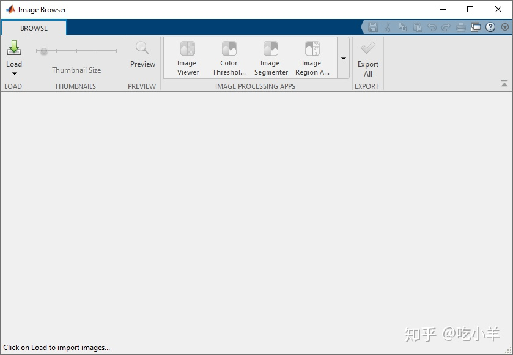
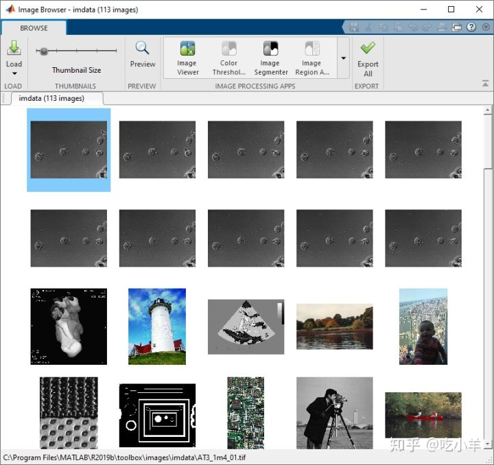
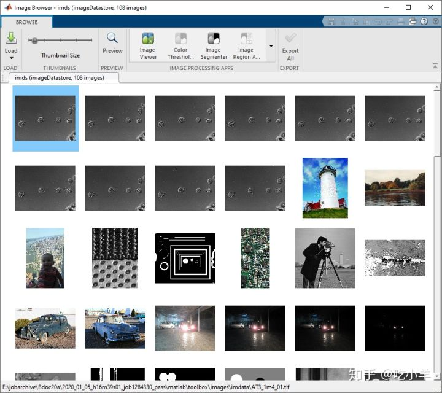
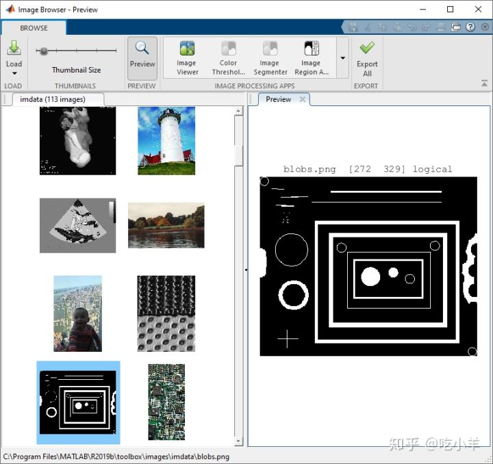
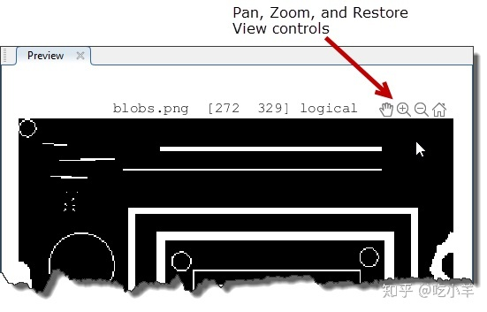
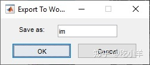
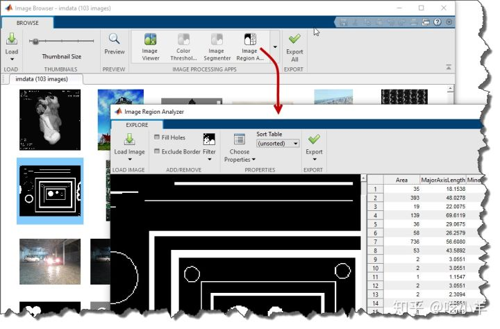

Home
本示例说明如何使用“图像浏览器”这个应用查看文件夹或图像数据存储区中所有图像的缩小版本，称为缩略图。您也可以查看单个图像的高分辨率版本。此外，您可以使用“图像浏览器”应用程序在另一个应用程序（例如“图像区域分析器”应用程序）中打开选定的图像。
查看文件夹中图像的缩略图
要查看文件夹中所有图像的缩略图，请从MATLAB®工具栏中打开图像浏览器应用程序。在“应用程序”选项卡上的“图像处理和计算机视觉”部分中，单击“图像浏览器”：

首先单击“加载”，然后选择“加载图像文件夹”，将图像加载到应用程序中。该应用程序显示文件浏览器窗口。导航到要查看的文件夹。对于此示例，选择示例图像文件夹imdata。
您还可以使用imageBrowser功能在命令行中打开应用程序，指定要查看的文件夹的名称。例如，要查看样本图像文件夹中的所有图像，请使用以下命令：
imageBrowser(fullfile(matlabroot,'toolbox/images/imdata/'));
该图像浏览器的文件夹中的所有图像的应用所显示的缩略图。要调整图像缩略图的大小，请使用应用程序工具栏中的“缩略图大小”滑块。

在图像数据存储区中查看图像的缩略图
要查看图像数据存储中所有图像的缩略图，请从MATLAB®工具栏中打开“图像浏览器”应用程序。在“应用程序”选项卡上的“图像处理和计算机视觉”部分中，单击“图像浏览器”。
首先单击“加载”，然后选择“从工作空间加载图像数据存储”，将图像加载到应用程序中。
对于此示例，通过使用imageDatastore包含imdata文件夹中图像的功能来创建图像数据存储。
imds = imageDatastore(fullfile(matlabroot,'toolbox/images/imdata/'));
在对话框中，选择图像数据存储变量，然后单击确定。该图像浏览器的文件夹中的所有图像的应用所显示的缩略图。

您还可以使用该imageBrowser函数在命令行中打开应用程序，指定要查看的图像数据存储的名称。例如，要查看从示例图像文件夹创建的图像数据存储中的所有图像，请使用以下命令：
imageBrowser(imds);
更详细地浏览图像
要详细查看“图像浏览器”应用程序中显示的图像，请选择该图像，然后单击“预览”。您还可以通过双击图像来预览。该应用程序在“预览”选项卡中以更高的分辨率显示图像。例如，blobs.png在“预览”选项卡中查看二进制图像。

要浏览“预览”选项卡中显示的图像，请在图像上停留时使用图像右上角的缩放选项。

将图像导出到工作区或图像数据存储区
如果要查看文件夹中的图像，则可以导出图像数据存储中的所有图像。在应用程序工具栏上，单击全部导出，然后指定图像数据存储的名称。要从文件夹中导出单个图像，请右键单击该图像，然后选择“将图像导出到工作区”。指定要在其中存储图像的工作空间变量的名称。
如果要在图像数据存储中查看图像，则可以将单个图像导出到工作区中。用鼠标右键单击该图像，图像之一到工作区，选择该图像，右键单击，然后选择“将图像导出到工作区”选项。在“导出到工作空间”对话框中，指定要用于图像的变量名称。

自定义文件夹视图
如果要在图像浏览器应用程序的文件夹中查看图像，则可以修改缩略图的显示。例如，您可以删除一些图像缩略图，然后将修改后的显示保存在图像数据存储中。在工具栏中单击全部导出，然后指定要用于数据存储的变量名称。以后当您打开此图像数据存储时，“图像浏览器”应用程序仅显示您保存的图像。该图像浏览器应用程序不会删除该文件中的图像系统，它只会从显示缩略图。
从图像浏览器应用程序启动另一个应用程序
您可以在“图像浏览器”应用程序中选择一个图像，然后在另一个应用程序中打开该图像。使用“图像浏览器”应用程序可以打开“图像查看器”应用程序，“颜色阈值”应用程序，“图像分割器”应用程序和“图像区域分析器”应用程序。 例如，在图像浏览器应用程序中选择blobs.png图像。在应用程序工具栏中，单击“图像区域分析器”应用程序。将打开“图像区域分析器”应用程序，其中包含blobs.png图像。

======================================================================
我的测试结果及程序
下面是我测试的代码：

注：本文根据MATLAB官网内容修改而成。